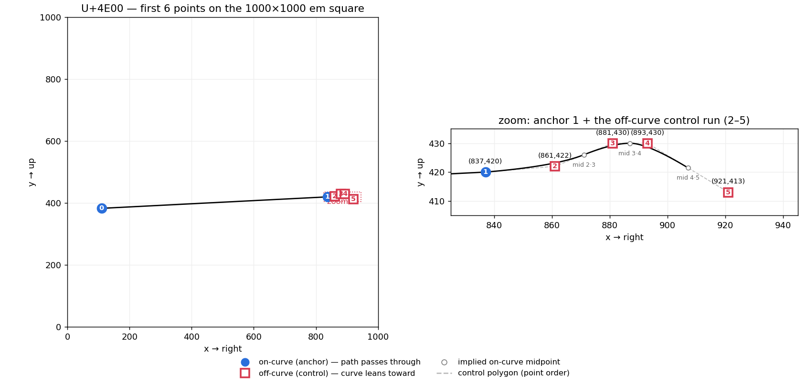
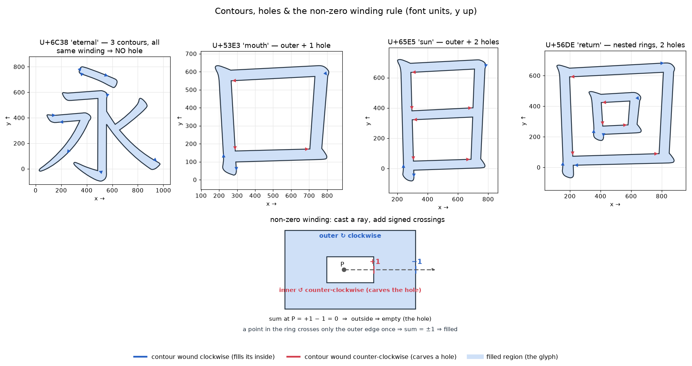
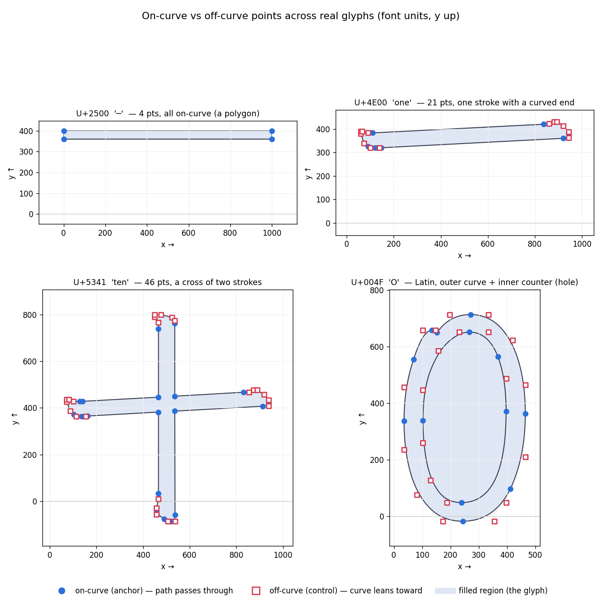

Module 03
Outlines
A glyph is a set of closed paths the renderer fills. We'll build up in the natural order: what stores the shapes (glyf), how you find one glyph's data (loca), how the two work together, what the resulting numbers mean, and finally how to decode the raw bytes by hand.
Exercises are interleaved. Concept ones have a solution; programming ones have a collapsible ✓ Check your answer.
concept · 1glyf — where the shapes live
The glyf table is one big blob holding every glyph's outline, one variable-length
record per glyph, packed back to back. A record describes the glyph as
contours — closed loops of points — plus a bounding box. The renderer
fills the region those loops enclose; it doesn't just stroke them.
Which kind of curve those points describe is set by the font's technology, announced by the sfnt magic from Module 1:
- TrueType (this font, magic
00 01 00 00): outlines inglyf, made of quadratic curves. (We unpack what that means in step 4.) - CFF / CFF2 (magic
OTTO): outlines in aCFFtable instead, made of cubic curves. Noglyfat all.
For now just hold this: glyf = the outline data; one packed record per
glyph. The next question is how you find one glyph inside that 24.7 MB blob.
Where do outlines live? Your font's sfnt magic is 00 01 00 00. Which
table holds its outlines, and what kind of curves does it use? What table and curve kind would a font
with magic OTTO use instead?
Show solution
00 01 00 00 ⇒ TrueType ⇒ outlines in glyf (located via loca),
quadratic curves. OTTO ⇒ outlines in the CFF table,
cubic curves, and no glyf/loca.
loca — finding one glyph's bytes
Because glyf records are variable length (a comma has a few points, a
CJK character hundreds) and packed with no separators, you can't jump to glyph i without a
map. That map is loca — an array of byte offsets into glyf,
one entry per glyph plus one — so numGlyphs + 1 entries, where
numGlyphs is the font's total glyph count (stored in the maxp table from
Module 1; 46830 here, as Module 2 used):
loca: off0 off1 off2 off3 … offN+1 (N+1 entries, N = numGlyphs)
│ │ │ │
▼ ▼ ▼ ▼
glyf: ┌─────────┬─────────────┬──────────┬─ … (variable-length records, packed)
│ glyph 0 │ glyph 1 │ glyph 2 │
└─────────┴─────────────┴──────────┴─ …
each loca[i] marks the START of glyph i, so glyph i's bytes = glyf[ loca[i] : loca[i+1] ]
Three consequences worth saying out loud:
- Why N+1 entries: glyph i runs from
loca[i]toloca[i+1], so the very last glyph needs an offset after it to mark its end. - Empty glyphs: if
loca[i] == loca[i+1]the glyph has zero bytes — it draws nothing (e.g. the space character). Perfectly normal. - Two storage formats: the entry size is picked by one field, written
head.indexToLocFormat("theindexToLocFormatfield of theheadtable").headis the OpenType font header table — a named table reached through the directory, listed in Module 1, not the 12-byte file header at offset 0. 0 = 16-bit "short" offsets stored as the real offset ÷ 2 (saves space, but only reaches 128 KB of glyf); 1 = 32-bit "long" offsets stored directly. This font uses 1 (its glyf is 24.7 MB — far past what short offsets could address).
Count loca, and read a gap. This font has numGlyphs = 46830. (a) How
many loca entries are there and why the extra one? (b) If loca[40] == loca[41],
what does that tell you about glyph 40?
Show solution
(a) 46831 — glyph i spansloca[i]…loca[i+1], so you need one
offset past the last glyph (46829) to bound it. (b) Glyph 40 has zero bytes — an
empty glyph that draws nothing (like a space).
glyf + loca together (and our first real coordinates)
Put them together to fetch one glyph. Take '一' (U+4E00). First codepoint → glyph id (via the
cmap from Module 2), then glyph id → byte range (via loca):
name = getBestCmap()[0x4E00] = "u4E00"
gid = getGlyphID(name) = 3171
loca[3171] = 931382 ┐ glyph 3171's bytes are
loca[3172] = 931454 ┘ glyf[931382 : 931454] → 72 bytes longThose 72 bytes are the outline. fontTools decodes them into a tidy object so you can read the shape without touching bytes yet:
from fontTools.ttLib import TTFont
font = TTFont(path)
g = font["glyf"]["u4E00"]
g.numberOfContours # 1 (>0 simple glyph, -1 composite)
g.coordinates # [(110,383), (837,420), (861,422), …] 21 points
g.flags # parallel bytes; bit0 (& 1) = on-curve
g.endPtsOfContours # [20] last point index of each contourSo glyph '一' is 1 contour, 21 points, and its first few coordinates are
(110,383) (837,420) (861,422) (881,430) …. Those raw numbers are what step 4 makes sense
of. (And yes — this is exactly the navigation the table directory does for the whole file, one level
down: an index of offsets pointing into a packed blob.)
Measure a glyph from loca. Find the glyph id for '一' (U+4E00), read
loca, and compute the glyph's byte length as loca[gid+1] − loca[gid]. Print
the gid, both offsets, and the length.
Stuck? a nudge (no full solution)
font.getGlyphID("u4E00") gives the gid; font["loca"] indexes like a list
of byte offsets (numGlyphs+1 of them). Length = the gap between consecutive entries.
✓ Check your answer
gid 3171;loca[3171]=931382, loca[3172]=931454; length
72 bytes.
Self-check above — or paste the numbers to your tutor.
What each coordinate means
Now the payoff. We have a list of points like (110, 383) and a flag per point. Two
things to decode: where a point is, and what role it plays.
Where: font units on the em square
Coordinates are in font units on the em square. Here
unitsPerEm = 1000, so (110, 383) is 110 units right, 383 up, on a 1000×1000
design grid (x → right, y → up; the baseline is y = 0). How that grid scales to pixels is all of
Module 4; for now just read points as positions on a 1000-unit grid.
Role: on-curve vs off-curve — and what a Bézier curve is
Each point's flag bit 0 marks it on-curve or off-curve. To see why that matters, here's the one idea underneath: start with a straight line from A to B, then drop a third point C off to the side and treat it as a magnet — bend the line so it bulges toward C, while still starting at A, ending at B, and never reaching C. That bent line is a quadratic Bézier curve.
C ● ← off-curve "control" (the magnet: curve leans toward it, never touches)
· ·
· · ← the actual curve
A ●· ·● B
on-curve on-curve (the curve DOES pass through A and B)
- On-curve points (A, B) — the path passes through them; also called anchors (the outline is pinned to them).
- Off-curve points (C) — the path only leans toward them; also called control points. C far out → big bulge; C on the A–B line → straight.
Quadratic vs cubic = how many magnets per segment: quadratic has one control point (TrueType); cubic has two, one near each end (CFF), enough for an S-curve in a single segment. A quadratic can't make an S in one go, so TrueType chains several — why TrueType glyphs carry more points than CFF for the same shape.
Reading a flag string
A contour is a loop of these points. The on-curve flags tell you the segments:
1 1— two anchors in a row, no magnet between ⇒ a straight edge.1 0 1— anchor, control, anchor ⇒ one curved segment.… 0 0 …— two off-curve points in a row ⇒ TrueType implies an on-curve point at their midpoint, so a run of controls becomes a smooth chain of arcs.
So '一''s first six flags 1 1 0 0 0 0 read as: anchor, anchor (the straight top edge),
then a run of four controls (the rounded right end), with implied midpoints between them. Here it is
literally, on the em square:

Contours, holes, and winding
A glyph can have several contours, and each contour has a direction — the order in which its points are listed traces the loop either clockwise or counter-clockwise. That direction is not decoration: it's how the renderer decides which regions are solid and which are holes.
How the non-zero winding rule works
To decide whether any point is inside the glyph, the renderer uses the non-zero winding rule (Chinese: 非零环绕规则): shoot a ray from that point off to infinity and watch it cross contour edges. Each crossing counts +1 or −1 depending on the direction the edge is heading as it crosses (which is set by the contour's winding). Add them up — the point is filled when the sum is not zero, and empty when it's zero. (A simpler alternative, the even-odd rule, 奇偶规则, just counts crossings and fills on odd counts; TrueType uses non-zero.)
In this font — checkable with the area sign of each contour — outer contours run clockwise and holes run counter-clockwise. That opposite direction is the whole trick:
- A point in the ring (between outer and inner) — the ray crosses only the outer
edge once ⇒ sum
±1⇒ filled. - A point in the inner region — the ray crosses the inner edge and the outer
edge, and because they wind opposite ways the two crossings cancel (
+1 − 1 = 0) ⇒ empty ⇒ a hole. - The key consequence: the inner contour carves a hole only because it is wound
the opposite way. Wind it the same way as the outer and the sums become
2, never zero — the "hole" fills in solid. Direction, not nesting alone, makes the hole.
Why the ray's direction doesn't matter
That recipe should make you suspicious: if I shoot the ray straight up instead of to the right, do I get the same answer? Yes — always, and seeing why is the heart of the whole rule, so let's be careful.
Forget the ray for a moment. Stand at the test point P and watch a pen trace the entire contour once around. Track only the direction from P to the pen — an angle that swings as the pen moves. When the pen returns to its start, that angle returns too, but along the way it may have wound around P some whole number of full turns. That integer — counter-clockwise turns minus clockwise turns — is the winding number (环绕数 / 卷绕数) of P. Read that definition again: it mentions no ray at all. It depends only on P and the curve.
Ray-casting is merely a way to count those turns. Each time the contour crosses your ray, the
pen's direction is sweeping past the ray's one fixed angle — once in the +turn sense (count +1)
or the −turn sense (−1). Over the full loop, the signed crossings add up to exactly the net
number of turns — the winding number. Since that number contains no ray, every ray, in every
direction, must report the same total. The ray is just a tick-mark for counting turns; where you
put the tick can't change how many turns the pen actually made.
+1 and a −1 that cancel. So the
signed sum never moves as the ray turns ⇒ all directions agree. (The even-odd rule survives for the same
reason: crossings still appear and vanish in pairs, so the parity of the count can't
change either.)
One honest caveat: choose a generic ray — one that doesn't pass exactly through a listed point or run along an edge. Those degenerate directions are only finitely many; real rasterizers sidestep them with a fixed tie-break (e.g. "count an edge only at its lower endpoint") so a boundary pixel is never double-counted or missed.
When is "clockwise" even defined?
We keep saying "this contour is clockwise, that one counter-clockwise." When does a loop actually
have one global direction? Here's the easy way to see it: walk all the way around a loop that
never crosses itself. Your facing direction turns through exactly one full
circle by the time you're back — either +360° (counter-clockwise) or
−360° (clockwise). That sign is the loop's orientation. The number you actually
compute is the signed (shoelace) area: positive ⇒ counter-clockwise, negative ⇒
clockwise (with y up) — exactly how every contour in the figure was labelled.
It stops being defined in two cases, both absent from clean glyphs:
- Self-intersecting (a figure-eight): one lobe turns each way, so there is no single
direction — and a symmetric figure-eight has signed area exactly
0, the lobes cancelling. - Degenerate (zero area): collinear points, or a path that runs out and back. Signed
area is
0— nothing to call clockwise.
The reassuring part: the rasterizer never needs a global CW/CCW label anyway. The winding number is defined point-by-point from local signed crossings (the ray count above), so a fill is unambiguous even for self-intersecting or overlapping paths. Fonts simply adopt the convention that every contour is a simple, consistently-wound loop — which is why the tidy "outer clockwise / hole counter-clockwise" picture holds for real glyphs.

So having several contours does not imply a hole — '永' proves it. And the same rule governs Latin: an 'O' is just an outer contour plus one opposite-wound inner contour, exactly like '口'. The points gallery shows that 'O' structure alongside the simpler glyphs:

Classify points. '一''s first six points have flags 1 1 0 0 0 0 and
coordinates (110,383) (837,420) (861,422) (881,430) (893,430) (921,413). Label points
0–5 as anchor or control, and give the implied on-curve point between points 2 and 3.
Show solution
0, 1 = anchors; 2–5 = controls. Points 2 and 3 are adjacent off-curve points, so the implied on-curve midpoint is((861+881)/2, (422+430)/2) = (871, 426); the curve passes through
it, splitting 2→3 into two quadratic segments.
Get the points, and render them. Load a glyph (try 'u5341', '十')
and (a) print its numberOfContours, total points, and on-curve/off-curve counts; (b)
render it — either replay it through a fontTools pen, or scatter g.coordinates with
matplotlib, colouring on-curve vs off-curve by flag & 1. Eyeball it against the
gallery above.
Stuck? a nudge (no full solution)
g = font['glyf']['u5341'] gives g.coordinates and g.flags
(bit 0 = on-curve). For a filled render, font.getGlyphSet()['u5341'].draw(pen) with a
pen replays moveTo/lineTo/qCurveTo/closePath; for a quick scatter, just plot the
coordinates with two colours.
✓ Check your answer
'十':numberOfContours = 1, 46 points, 22 on-curve,
24 off-curve — a cross, anchors at the corners, controls at the rounded ends.
Self-check above — or paste your counts + render to your tutor.
Hand-parsing a glyph's bytes
We've used the library; now decode the raw bytes ourselves. '一' has 21 points (a lot to do by
hand), so we'll use the smallest real glyph that still shows everything: '─' (U+2500),
a single 4-point rectangle. First navigate to its bytes (table offsets from Module 1:
glyf @ 592352, loca @ 405028):
name = getBestCmap()[0x2500] = "boxdrawingslighthorizontal" (not "u2500"!)
gid = getGlyphID(name) = 869
loca[869] = 153477 ┐ length = 153501 − 153477 = 24 bytes
loca[870] = 153501 ┘ file offset = 592352 + 153477 = 745829Note glyph names vary — resolve via the cmap (getBestCmap()[0x2500])
rather than assuming "u2500". '一' happens to be "u4E00", but that pattern isn't guaranteed.
The 24 raw bytes:
00 01 00 00 01 68 03 e8 01 90 00 03 00 00 11 35 21 15 03 e8 01 68 28 28
numberOfContours · bounding box · endPtsOfContours · instructionLength · flags · coordinates
The glyph header
| bytes | field | value | meaning |
|---|---|---|---|
| 00 01 | numberOfContours | 1 | ≥0 ⇒ simple glyph (−1 ⇒ composite) |
| 00 00 01 68 03 e8 01 90 | xMin yMin xMax yMax | 0, 360, 1000, 400 | bounding box (int16 each) |
| 00 03 | endPtsOfContours[0] | 3 | contour ends at point 3 ⇒ 4 points |
| 00 00 | instructionLength | 0 | no hinting bytecode |
Flags & the delta-coded coordinates
After the header come the flags (one per point, run-length compressible), then the coordinates. The flag byte is a bitfield:
| bit | mask | name | meaning |
|---|---|---|---|
| 0 | 0x01 | ON_CURVE | 1 = on-curve anchor, 0 = off-curve control |
| 1 | 0x02 | X_SHORT | x delta is 1 byte (else 0 or 2) |
| 2 | 0x04 | Y_SHORT | y delta is 1 byte |
| 3 | 0x08 | REPEAT | next byte = how many extra points repeat this flag |
| 4 | 0x10 | X_SAME / + | dual: if X_SHORT → sign (1=+, 0=−); else → x delta is 0 (same as prev) |
| 5 | 0x20 | Y_SAME / + | dual: if Y_SHORT → sign; else → y delta is 0 |
Our four flag bytes 11 35 21 15 (no REPEAT bit, so one per point): all four have bit 0
set ⇒ all on-curve. Coordinates follow three rules:
Decoding the trailing 03 e8 01 68 28 28 — x deltas first, then y:
X: pt0 SAME→0, pt1 SAME→0, pt2 int16 03 e8 = +1000, pt3 SAME→0 ⇒ x = 0, 0, 1000, 1000
Y: pt0 int16 01 68 = +360, pt1 short 28 = +40 (SAME/+ set ⇒ +),
pt2 SAME→0, pt3 short 28 = −40 (SAME/+ clear ⇒ −) ⇒ y = 360, 400, 400, 360| point | (x, y) | on-curve |
|---|---|---|
| 0 | (0, 360) | yes |
| 1 | (0, 400) | yes |
| 2 | (1000, 400) | yes |
| 3 | (1000, 360) | yes |
Four on-curve corners ⇒ a filled rectangle (0,360)→(1000,400): a full-width bar 40
units tall at mid-height — exactly '─', matching the header's bounding box. All 24
bytes accounted for.
A composite in bytes: dieresis
A composite glyph draws no outline of its own — it places other glyphs. The spacing
dieresis has numberOfContours = −1, then one component record:
ff ff 00 6c 02 50 01 88 02 bd 00 07 a4 67 01 f4 00 00
| bytes | field | value |
|---|---|---|
| ff ff | numberOfContours | −1 ⇒ composite |
| 00 6c…02 bd | bounding box | (108,592)…(392,701) |
| 00 07 | component flags | ARGS_ARE_WORDS | ARGS_ARE_XY | ROUND_TO_GRID |
| a4 67 | glyphIndex | 42087 = "dieresiscomb" |
| 01 f4 00 00 | arg1, arg2 (xy) | (500, 0) placement offset |
No MORE_COMPONENTS bit ⇒ the only component. The whole glyph is "place
dieresiscomb at (500, 0)". That's why composites matter for CJK (share a
radical) and accented Latin (base + mark): store one outline, reference it many times — saving space and
keeping every copy visually identical.
Hand-parse a glyph outline. Without using g.coordinates, pull a
simple glyph's raw bytes, parse the header, the flags (mind REPEAT), and the delta-coded coordinates,
and reconstruct the absolute points. Verify against g.coordinates. Use '─'
for a clean start.
Stuck? a nudge (no full solution)
Bytes viaraw = g.compile(font['glyf']) (or seek in the file with loca).
Header: int16 numberOfContours + 4×int16 bbox; then numberOfContours
uint16 endpoints; uint16 instructionLength + that many instruction bytes;
flags (expand REPEAT); then all x deltas, then all y deltas, widths from the SHORT/SAME bits;
accumulate from 0.
✓ Check your answer (for '─')
4 on-curve points(0,360) (0,400) (1000,400) (1000,360) — a rectangle matching the
bbox (0,360)…(1000,400).
Self-check above — or paste your parser + points to your tutor.
Exploring outlines yourself
Same type/dir/help recipe. A glyph object exposes
.numberOfContours, .coordinates, .flags,
.endPtsOfContours, .isComposite(), .getComponentNames(glyf),
.draw(pen)/.drawPoints(pen), .program (hinting), and
.compile(glyf) (back to the raw bytes).
The big idea here is the pen protocol: outlines are replayed as drawing commands
(moveTo, lineTo, qCurveTo, closePath) into a "pen".
RecordingPen captures them; BoundsPen measures; SVGPathPen emits
SVG. It turns raw points into something usable without redoing the implied-midpoint math:
from fontTools.pens.recordingPen import RecordingPen
pen = RecordingPen()
name = font.getBestCmap()[0x2500] # "boxdrawingslighthorizontal"
font.getGlyphSet()[name].draw(pen)
pen.value # [('moveTo', …), ('lineTo', …), ('closePath', ())]| tool | use |
|---|---|
| ttx -t glyf font.ttf | dump glyf as readable XML — points, flags, components |
| fontforge | open a glyph; its outline view shows on/off points directly |
Replay outlines through a pen. Capture the drawing commands for '─'
(U+2500) and '一' (U+4E00) with a RecordingPen. How does the rectangle's
command list differ from the one with curves? Which command carries the off-curve run? Bonus:
dir() the glyph object and name two members you hadn't used.
Stuck? a nudge (no full solution)
gs = font.getGlyphSet(); gs[font.getBestCmap()[0x2500]].draw(pen) fills
pen.value (the glyph name is "boxdrawingslighthorizontal"). Straight edges →
lineTo; quadratic runs → qCurveTo (fontTools rebuilds the implied
midpoints for you).
✓ Check your answer
'─' is allmoveTo/lineTo×3/closePath (a polygon, no curves);
'一' contains qCurveTo commands whose extra points are the off-curve controls. Useful
members to find: getCoordinates, recalcBounds, removeHinting,
drawPoints.
Self-check above — or paste your two command lists to your tutor.